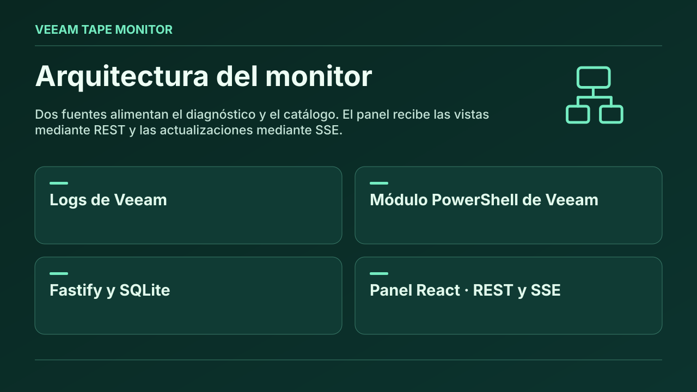
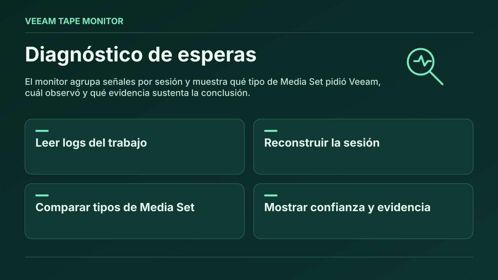
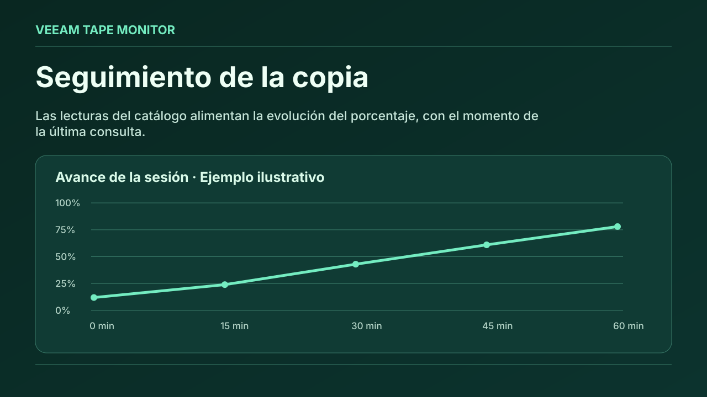
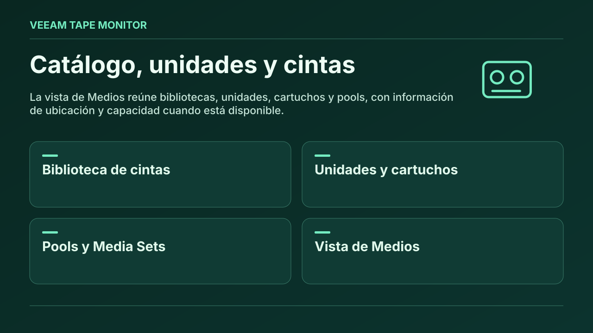
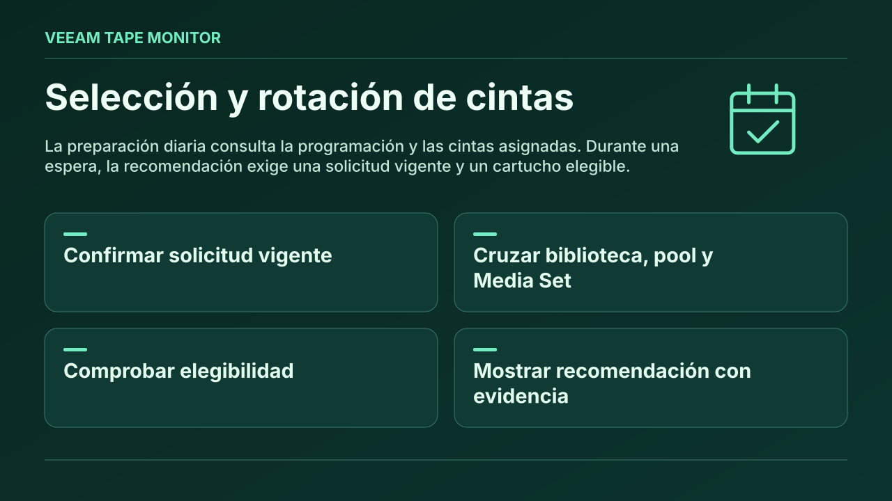
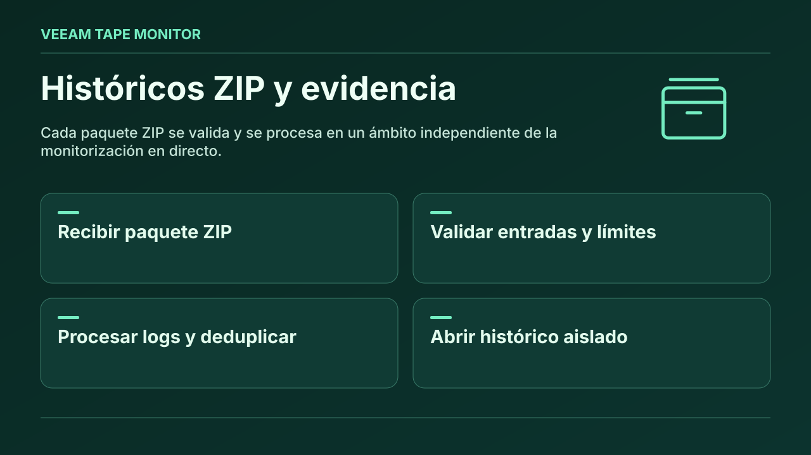
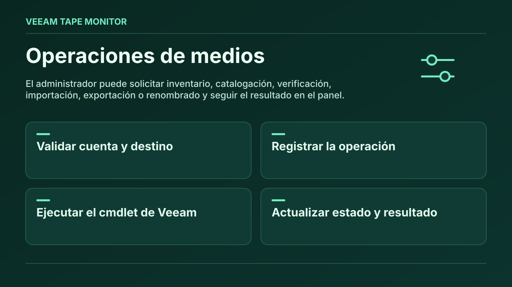
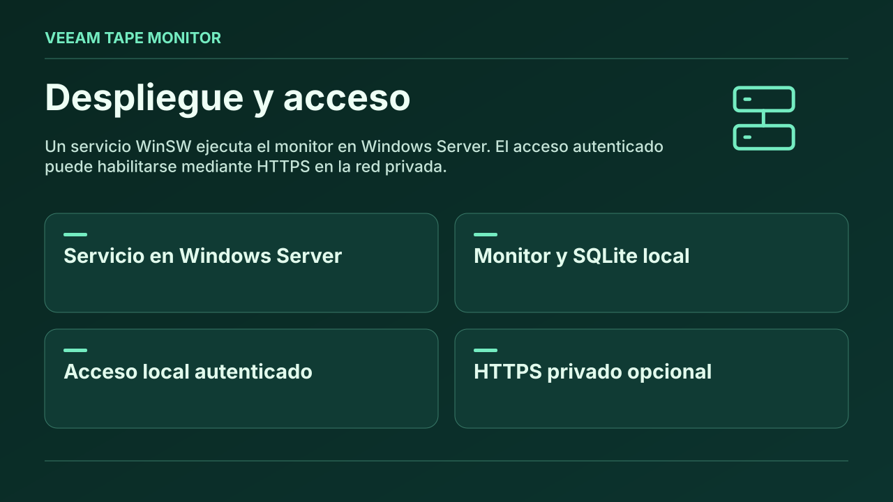

Veeam Tape Monitor
Panel web interno que amplía la visión operativa de Veeam Backup & Replication. Integra los logs y el catálogo de Veeam en una API propia para explicar esperas, seguir el progreso de las copias, preparar rotaciones y gestionar medios de cinta.

Interfaz operativa
Vista del trabajo en ejecución, el último cartucho aceptado, el calendario y el progreso de la copia.
Ampliar interfaz
Arquitectura técnica
Recorrido desde los logs y el catálogo de Veeam hasta el panel web.
Ampliar láminaColección visual
Explora el flujo de datos, el diagnóstico, la gestión de cartuchos y el despliegue. Cada lámina incluye un diagrama de flujo editable.
Arquitectura del monitor
Dos fuentes alimentan el diagnóstico y el catálogo. El panel recibe las vistas mediante REST y las actualizaciones mediante SSE.
Diagnóstico de esperas

Ampliar láminaEl monitor agrupa señales por sesión y muestra qué tipo de Media Set pidió Veeam, cuál observó y qué evidencia sustenta la conclusión.
Seguimiento de la copia

Ampliar láminaLas lecturas del catálogo alimentan la evolución del porcentaje, con el momento de la última consulta.

Catálogo, unidades y cintas

Ampliar láminaLa vista de Medios reúne bibliotecas, unidades, cartuchos y pools, con información de ubicación y capacidad cuando está disponible.
Selección y rotación de cintas

Ampliar láminaLa preparación diaria consulta la programación y las cintas asignadas. Durante una espera, la recomendación exige una solicitud vigente y un cartucho elegible.
Históricos ZIP y evidencia

Ampliar láminaCada paquete ZIP se valida y se procesa en un ámbito independiente de la monitorización en directo.
Operaciones de medios

Ampliar láminaEl administrador puede solicitar inventario, catalogación, verificación, importación, exportación o renombrado y seguir el resultado en el panel.
Despliegue y acceso

Ampliar láminaUn servicio WinSW ejecuta el monitor en Windows Server. El acceso autenticado puede habilitarse mediante HTTPS en la red privada.


Documentación del portfolio basada en el código y las pruebas del proyecto. El gráfico de progreso de la colección usa datos ilustrativos.
Documentación técnica
Descargar documentación (Markdown)Necesidad operativa
Durante una espera de cinta, el operador necesita saber qué cartucho solicita el trabajo, por qué se ha rechazado el que está montado y qué evidencia respalda el diagnóstico. El panel añade esa vista a la operación diaria de Veeam, junto con los históricos y la preparación del siguiente ciclo.
Integración y flujo de datos
El monitor lee los logs de forma incremental, guarda eventos y puntos de lectura en SQLite y reconstruye sesiones y solicitudes. El módulo PowerShell de Veeam aporta catálogo, trabajos, tareas y progreso. Fastify publica la API REST y usa SSE para avisar al panel React cuando hay cambios.
Evidencia y reglas de decisión
El diagnóstico conserva la línea original y distingue entre un rechazo explícito y una generación inferida. La recomendación requiere una espera vigente y un medio libre que cumpla las reglas de biblioteca, pool, capacidad y protección. Al abrir un ZIP, la evidencia se consulta dentro de su propio histórico.
Operación y despliegue
WinSW aloja el servicio en Windows Server con almacenamiento SQLite local. El servicio autentica el acceso local y el HTTPS privado opcional. Las operaciones de medios requieren permisos específicos, se registran y conservan su estado para consultar el resultado.
Tecnologías utilizadas
React · TypeScript · Vite · Node.js · Fastify · SQLite · PowerShell · Zod · Vitest · WinSW